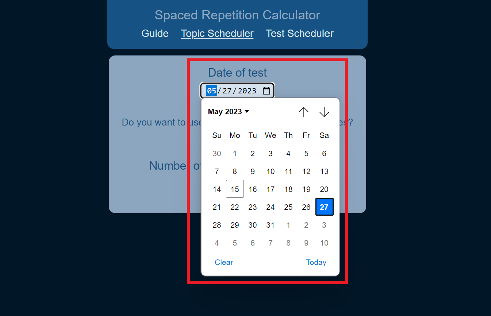
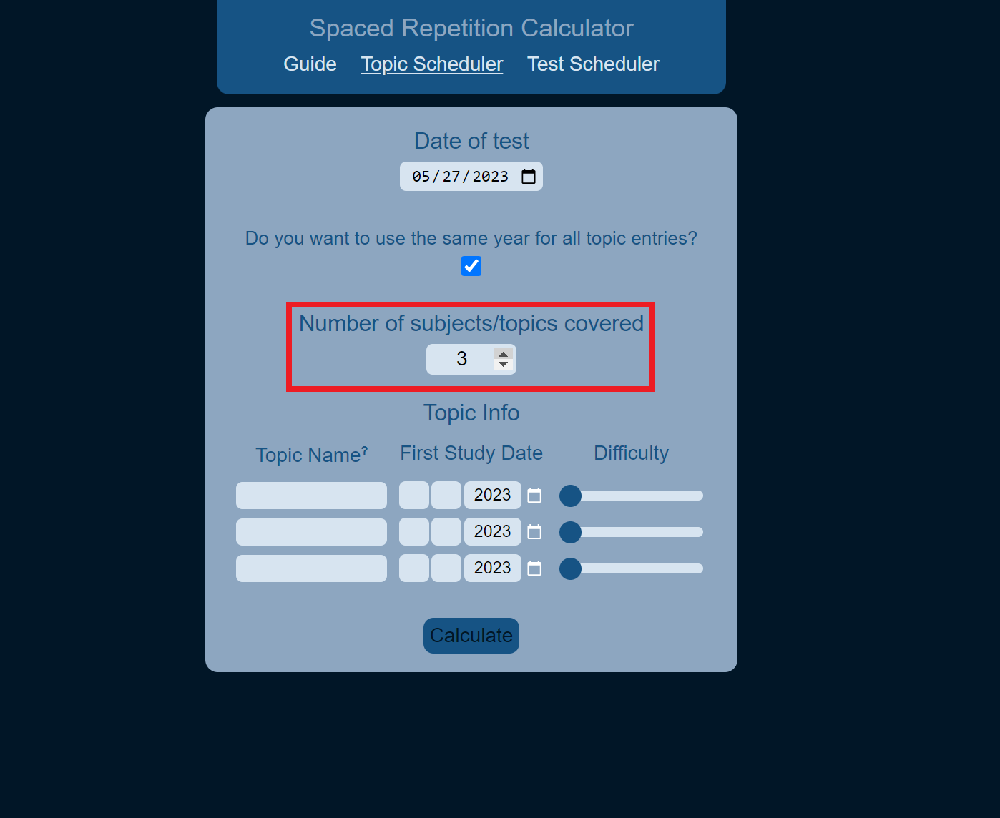
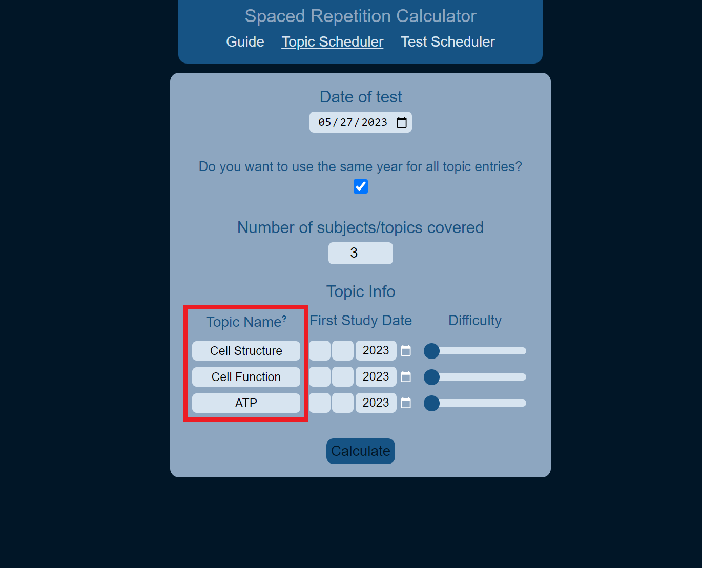
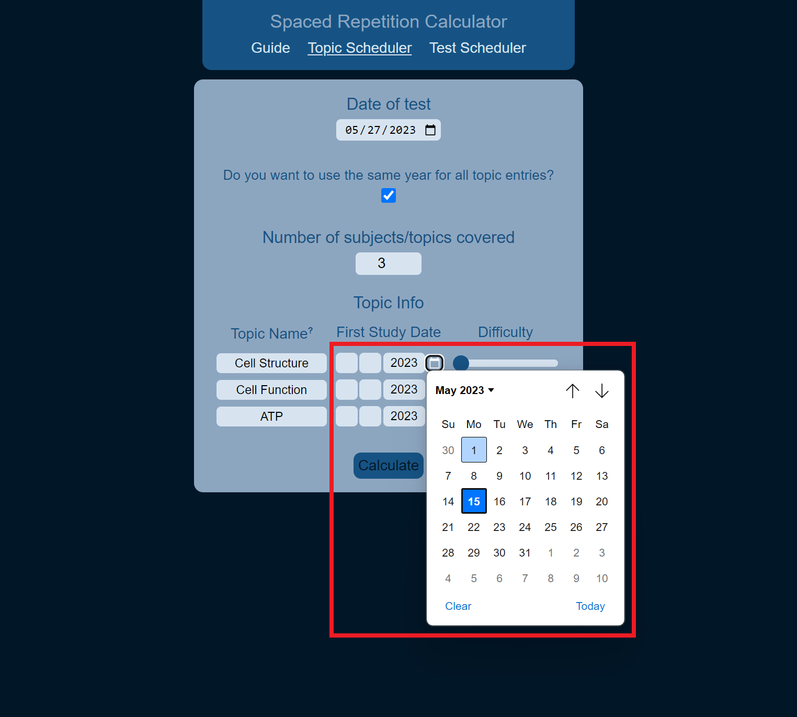
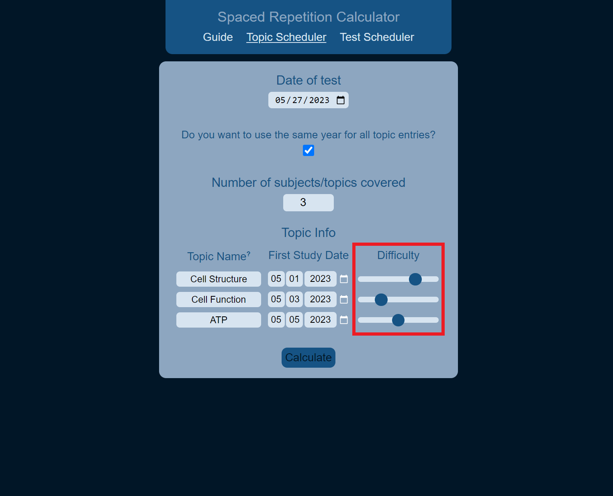
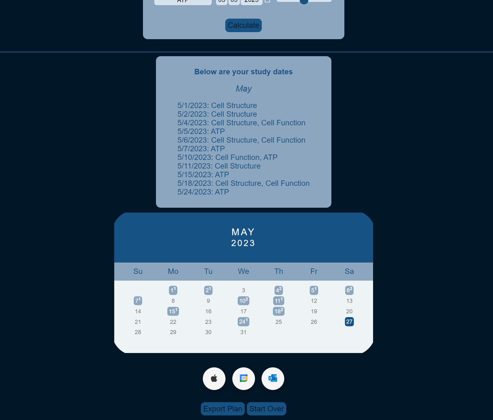

What is "spaced repetition"?
"Spaced repetition is a powerful technique that will help you memorize information in much less time than it would take otherwise. The idea of spaced repetition is to space out your repetitions – or review sessions – so that you are not trying
to cram all the knowledge into your brain at once."1
What are some benefits?
- It continually re-exposes you to information.
- It helps strengthen your memory.
- It helps to increase active study time and learning, rather than just passively taking in information that may or may not be remembered.
- It helps you to relate new material with previously stored material, and make connections.
- Go to the Topic Scheduler page
- Enter your test date at the top
- If you would like to use the same year for everything (so that you don't need to type it in repeatedly), check the box.
- Enter the number of topics you need to study.
- Enter a name for each topic. If you leave the names blank, a number will be assigned.
- Enter the dates that you would like to start studying each topic. This could be the day you learn the material, or just the day you plan on starting.
- Finally, rate the difficulty of the topic. The harder a topic is, the more often it should be studied.
- Hit calculate!
From here, a list of study dates will come up, along with a calendar to help visualize the study plan. If there is a superscript on a date (and it's highlighted), you can hover over it to see a list of the study topics for that day. The number
represents the number of topics to study on that day.
At the bottom of the page, you can also export these dates to your calendar, or start the process over.
Pictures, please!
- Go to the Topic Scheduler page
- Enter your test date at the top

- If you would like to use the same year for everything (so that you don't need to type it in repeatedly), check the box.
- Enter the number of topics you need to study.

- Enter a name for each topic. If you leave the names blank, a number will be assigned.

- Enter the dates that you would like to start studying each topic. This could be the day you learn the material, or just the day you plan on starting.

- Finally, rate the difficulty of the topic. The harder a topic is, the more often it should be studied.

- Hit calculate!

From here, a list of study dates will come up, along with a calendar to help visualize the study plan. If there is a superscript on a date (and it's highlighted), you can hover over it to see a list of the study topics for that day. The number
represents the number of topics to study on that day.
At the bottom of the page, you can also export these dates to your calendar, or start the process over.